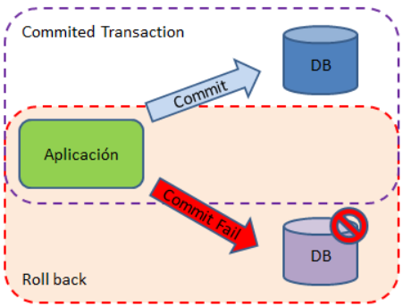

⚡Gestión de transacciones en JDBC
📘 Concepto de transacción
En el ámbito de las Bases de Datos, una transacción es un conjunto de sentencias SQL que se ejecutan como si fueran una sola, es decir, de forma atómica.
o se realizan todas con éxito, o ninguna de ellas se aplica.
La idea principal es que las operaciones que la componen se deben ejecutar todas o ninguna.
Esto ayuda a preservar la integridad de los datos e impide posibles desfases entre clientes y servidor.
Una transacción tiene dos finales posibles:
- COMMIT → confirma los cambios en la base de datos.
- ROLLBACK → deshace los cambios efectuados hasta el momento.

Propiedades ACID de una transacción:
- Atomicidad → todas las operaciones se ejecutan o se deshacen.
- Consistencia → la base de datos pasa de un estado válido a otro válido.
- Aislamiento → las transacciones concurrentes no interfieren entre sí.
- Durabilidad → una vez confirmado, el resultado es permanente.
⚡ Auto-commit en JDBC
Por defecto, al menos en MySQL, una conexión trabaja en modo auto-commit = true.
Esto significa que cada sentencia SQL es en sí misma una transacción: los cambios se aplican automáticamente si no hay error.
Para definir transacciones manuales de varias operaciones, debemos desactivar el auto-commit:
con.setAutoCommit(false);
✅ commit() y ❌ rollback()
Cuando el auto-commit está desactivado, debemos controlar explícitamente el final de la transacción:
- commit() → Confirma la transacción y hace permanentes los cambios.
- rollback() → Revierte los cambios realizados desde el último commit o rollback.
public static void execute (String [] sqlqueries) throws SQLException {
String user = "patricia";
String password = "marti";
String url = "jdbc:mysql://localhost/severo_ad";
try (final Connection con = DriverManager.getConnection(url, user, password)) {
try (Statement stmt = con.createStatement()) {
con.setAutoCommit(false);
for (String query : sqlqueries) {
stmt.executeUpdate(query);
}
con.commit();
con.setAutoCommit(true);
} catch (SQLException ex) {
con.rollback();
System.out.println("Error en la transacción. Cambios revertidos.");
}
}
}